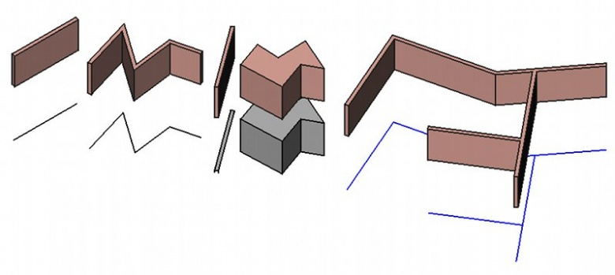

|
| Posizione nel menu |
|---|
| Architettura → Muro |
| Ambiente |
| Architettura |
| Avvio veloce |
| W A |
| Vedere anche |
| Struttura |
Descrizione
Questo strumento crea un oggetto Muro utilizzando come base una forma o oggetto mesh. Un muro può essere costruito anche senza alcun oggetto di base, nel qual caso si comporta come un volume cubico, utilizzando le proprietà lunghezza, larghezza e altezza. Quando è costruito usando una forma esistente, un muro può essere basato su:
- Un oggetto lineare 2D, come ad esempio una linea, un arco, una spezzata o uno schizzo, in questo caso è possibile modificarne lo spessore, l'allineamento (a destra, a sinistra o al centro) e l'altezza.
- Una faccia o una superficie piana, nel qual caso si può modificare solo l'altezza. Le proprietà Lunghezza e larghezza non hanno alcun effetto. Se la faccia di base è verticale, invece, il muro utilizza la proprietà larghezza invece di altezza, e consente di costruire pareti usando lo spazio come oggetto o studi della massa.
- Un solido, nel qual caso non è possibile cambiare nulla. La parete utilizza semplicemente il solido base come sua forma.
- Un mesh, nel qual caso il mesh deve essere un solido chiuso, cioè un solido manifold.
 L'esempio sopra mostra delle pareti costruite su una linea, su una spezzata, su una faccia, su un solido e su uno schizzo.
{kind=link}
Agli oggetti Pareti si possono anche applicare Aggiunte o Sottrazioni. Le Aggiunte sono altri oggetti le cui forme sono unite alla forma Muro in lavorazione, mentre le Sottrazioni sono forme che vengono eliminate.
Le Aggiunte e le Sottrazioni si eseguono con gli strumenti  Aggiungi e
Aggiungi e  Sottrai. Le Addizioni e le Sottrazioni non hanno alcuna influenza sui parametri della parete, tipo altezza e larghezza, che possono ancora essere modificati.
Sottrai. Le Addizioni e le Sottrazioni non hanno alcuna influenza sui parametri della parete, tipo altezza e larghezza, che possono ancora essere modificati.
Le pareti possono anche avere l'altezza automatica, se sono incluse in un oggetto di livello superiore, tipo il Piano. L'altezza deve essere impostata a 0, così il muro adotta l'altezza specificata per l'oggetto genitore.
Quando più pareti devono essere intersecate, è necessario inserirle in un piano per ottenere la loro geometria intersecata.
Utilizzo
Disegnare un muro dall'inizio
- Premere il pulsante
 Muro, oppure premere i tasti W e A.
Muro, oppure premere i tasti W e A. - Definire un primo punto nella vista 3D, o digitare le sue coordinate.
- Definire un secondo punto nella vista 3D, o digitare le sue coordinate.
Disegnare un muro su un oggetto selezionato
- Selezionare uno o più oggetti per la geometria di base (oggetti Draft, schizzi, etc)
- Premere il pulsante Muro, oppure premere i tasti W e A
- Regolare, se necessario, le proprietà, come altezza o larghezza.
Opzioni
- Gli elementi Muro condividono le proprietà e i comportamenti comuni di tutti i Componenti Arch
- L'altezza, la larghezza e l'allineamento di un muro può essere impostato durante il disegno, tramite il pannello delle Azioni.
- Quando aggancia una parete di una parete esistente, entrambe le pareti si uniscono in una sola. Il modo in cui sono unite le due pareti dipende dalle loro proprietà. Se hanno la stessa larghezza, altezza e orientamento, la parete risultante sarà un oggetto basato su uno schizzo composto da più segmenti. Altrimenti, l'ultima parete verrà unita alla prima come oggetto aggiunta.
- Premere X, Y o Z dopo il primo punto per vincolare il secondo punto su un dato asse.
- Per inserire le coordinate manualmente, è sufficiente inserire il valore, quindi premere INVIO tra ogni componente X, Y e Z .
- Premere R oppure fare clic sulla casella di controllo per selezionare o deselezionare la modalità Relativo. In modalità Relativo, le coordinate del secondo punto sono relative al primo. In caso contrario sono assolute, a partire dal punto di origine (0,0,0).
- Premere SHIFT mentre si disegna per vincolare orizzontalmente o verticalmente il secondo punto rispetto al primo.
- Premere ESC o premere il pulsante Cancella per uscire dal comando attivo.
- Facendo doppio clic sul muro nella vista ad albero dopo la sua creazione si attiva la modalità di modifica che permette di accedere alle sue addizioni e sottrazioni e di modificarle .
- I muri multistrato possono essere facilmente creati costruendo diversi muri sulla stessa linea base. Impostando la proprietà Align a destra o a sinistra e specificando un valore di offset, si possono costruire efficacemente i diversi strati della parete. Inserendo una finestra in uno degli strati della parete l'apertura si propaga in tutti gli strati della parete creati con la stessa linea base.
- I muri possono anche utilizzare i Multi-Materiali. Quando si utilizza un multi-materiale, la parete diventa multistrato, utilizzando gli spessori specificati nel multi-materiale. A qualsiasi strato con uno spessore pari a zero viene assegnato lo spessore definito automaticamente dallo spazio rimanente definito dal valore Width della parete meno gli altri strati.
- I muri possono essere fatti per mostrare blocchi, invece di un singolo solido, attivando la proprietà Fai blocchi. La dimensione e l'offset dei blocchi possono essere configurati con proprietà diverse e la quantità di blocchi viene calcolata automaticamente. disponibile dalla versione 0,18
Aggancio
Con i muri dell'ambiente Arch l'aggancio funziona un po' diversamente da come funziona con gli altri oggetti di Arch e di Draft. Quando un muro è basato su un oggetto l'aggancio crea un ancoraggio all'oggetto base, e non alla geometria muro, consentendo di allineare facilmente i muri tramite le loro linee base. Quando invece si desidera agganciare la geometria muro, premere CTRL per trasferire l'ancoraggio all'oggetto muro.

Proprietà
Gli oggetti Parete ereditano le proprietà degli oggetti Part, e hanno anche le seguenti proprietà supplementari:
- DatiAlign: L'allineamento del muro sulla sua linea di base: a sinistra, a destra o al centro
- DatiBase: L'oggetto di base su cui è costruito il muro
- DatiFace: L'indice della faccia dell'oggetto base da usare. Se il valore non è impostato o è 0, viene utilizzato l'intero oggetto
- DatiForce Wire: Se è True, e la parete si basa su una faccia, viene usato solo il perimetro della faccia, ottenendo una parete confinante con la faccia
- DatiLength: La lunghezza del muro (non utilizzato quando la parete è basato su un oggetto)
- DatiWidth: La larghezza della parete (non utilizzato quando la parete è basato su una faccia).
- DatiHeight: L'altezza della parete (non utilizzato quando la parete è basato su un solido). Se non viene data l'altezza e il muro è inserito in un oggetto piano la cui altezza è definita, la parete assume automaticamente il valore dell'altezza del piano.
- DatiNormal: La direzione di estrusione per la parete. Se è impostata a (0,0,0), la direzione di estrusione è automatica.
- DatiOffset: Specifica la distanza tra la parete e la sua linea base. Funziona solo se la proprietà Align è impostata a destra o a sinistra.
disponibile dalla versione 0.18
- DATIMake Blocks: Abilita questo per far sì che il muro generi blocchi
- DATIBlock Length: La lunghezza di ciascun blocco
- DATIBlock Height: L'altezza di ogni blocco
- DATIOffset First: L'offset orizzontale della prima riga di blocchi
- DATIOffset Second: L'offset orizzontale della seconda riga di blocchi
- DATIJoint: La dimensione delle articolazioni tra ciascun blocco
- DATICount Entire: Il numero di interi blocchi (sola lettura)
- DATICount Broken: Il numero di blocchi interrotti (sola lettura)
Script
Lo strumento Muro può essere utilizzato nelle macro e dalla console python utilizzando la seguente funzione:
makeWall ( [obj],[length],[width],[height],[align],[face],[name] )
- Crea un muro basato su un dato oggetto, il quale può essere uno schizzo, un oggetto di Draft, una faccia o un solido. align può essere "Center","Left" o "Right". Quando non si fornisce alcun oggetto di base, è possibile utilizzare valori numerici per la lunghezza, la larghezza e l'altezza. Face può essere utilizzata per assegnare l'indice di una faccia dall'oggetto sottostante, su cui costruire questo muro, invece di utilizzare l'intero oggetto.
- Restituisce il muro creato, o Nulla se l'operazione fallisce.
Esempio:
import FreeCAD, Draft, Arch baseline = Draft.makeLine(FreeCAD.Vector(0,0,0),FreeCAD.Vector(2,0,0)) Arch.makeWall(baseline,None,0.1,2)